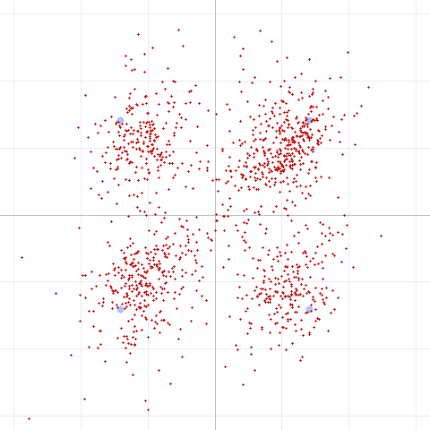
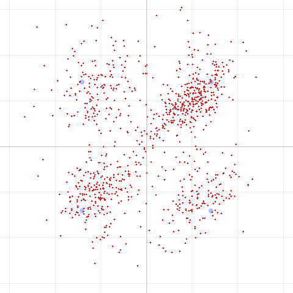
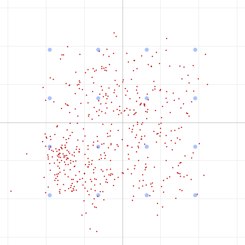

The story so far
- Part 1: DART over two UV-Pro radios — robust modes worked, aggressive modes failed, ceiling traced to the audio path.
- Part 2: the SBC bitpool adds a small noise floor, but raising it doesn't move the ceiling.
- Part 3: SBC's loudness vs. SNR bit allocation — a free ~2% EVM improvement for data, but still not the ceiling.
Every one of those said the same thing: the limiter is time-varying phase distortion in the FM audio path, not level, band, codec bitrate, or additive noise. But "it's probably phase noise" is a hypothesis, not a measurement. This post is about turning it into one.
You can't fix what you can't measure — or simulate
Our simulator had a blind spot: it modeled the SBC codec and additive noise perfectly, and through those impairments 16QAM decoded fine down to 8 dB SNR. The real radio failed 16QAM at a better nominal SNR. So the simulator literally could not reproduce the failure — which means we couldn't develop a fix against it.
So we built two things:
A carrier phase-noise channel model. The trick is that it must be time-varying: a static frequency response gets removed by the equalizer (which is why band shape and even multipath notches didn't matter over the air). We form the analytic signal and multiply it by a slowly-wandering random-walk phase — a knob for both magnitude (degrees RMS) and speed (how fast the phase drifts).
A phase-drift meter in the decoder. Using known pilot symbols sprinkled through the payload, the receiver measures the carrier phase directly — independent of its own decisions — and reports the drift in degrees per symbol. That single number tells us which regime we're in.
The regime question — and why it's everything
Phase noise comes in two flavors that look identical on an EVM meter but respond oppositely to a fix:
- Fast phase noise changes within a single OFDM symbol. That's inter-carrier interference — irreducible. No amount of tracking helps.
- Slow phase noise is stable within a symbol but drifts across the frame. It's correctable — and pilots, which give a decision-independent phase reference, are exactly the tool.
Simulating across the speed knob made the split undeniable. Here's 16QAM at a fixed EVM, sweeping only the phase-noise speed:
| Phase drift | With pilots | Without pilots |
|---|---|---|
| ~12°/symbol (fast) | fail | fail |
| ~5°/symbol (moderate) | 14.5% EVM ✅ | 17.0% ✅ |
| ~2.6°/symbol (slow) | 9.6% EVM ✅ | 14.5% ✅ |
Pilots win handily when the phase is slow, do nothing when it's fast. So the whole question of whether to add pilots (they cost ~12% throughput) came down to a single measurement we didn't yet have: how fast does the real link's phase actually drift?
The measurement that settled it
We rebuilt both radios with the pilot decoder and captured fresh frames. The meter read the same thing on every single capture:
Real-link carrier phase drift: 0.5 – 1.6° per symbol.
That's deep in the slow / decision-limited regime — the one where pilots help. Our earlier pessimism had come from a model calibrated to the fast regime; the real radio is ~6× slower than that guess. Measuring beat assuming.
And you can see it. Here's QPSK over the real link now — the clusters are round and centered, not sheared or spiraled. The phase is being tracked; the remaining spread is just additive noise:

The payoff: a rung of throughput
With the phase handled, a mode that used to fail came back to life. QPSK rate 2/3 (Level 2) — the first rung that failed in Part 1 — now decodes cleanly on the real link, every capture:

That moved the reliable ceiling from Level 1 to Level 2 (~2 → ~3 kbps, +50%), courtesy of four stacked receive-side improvements:
- a band-limited preamble chirp retuned to 400–1900 Hz (over-air sync correlation rose 0.80 → 0.88, because the radio rolls off the top of the band);
- decision-directed + pilot-aided phase tracking;
- MMSE equalization (limits noise blow-up on weak subcarriers);
- SBC SNR bit-allocation for data frames.
Where the ceiling actually is now
So why do 8PSK and 16QAM still fail? We finally have a clean answer. Here's 16QAM over the real link:

A diffuse cloud that never resolves into the 16-point grid — but the phase drift is only 0.9°/symbol. Phase is not the problem. This is raw SNR: ~28% EVM at ~11 dB, where 16QAM needs roughly 16 dB. It even matches the old pre-pilot 16QAM EVM almost exactly, because the residual is thermal noise — which pilots correctly don't touch.
We've cleanly separated the two impairments that were tangled at the start:
| Impairment | Status |
|---|---|
| Carrier phase noise | Solved — 0.5–1.6°/sym, tracked by pilots |
| Raw SNR | The remaining ceiling — 8PSK needs ~13 dB, 16QAM ~16 dB |
The lesson
The satisfying part isn't any single fix — it's the method. "It's the audio path" became "it's time-varying phase noise, specifically the slow kind, measuring 1.5°/symbol," and each refinement pointed at the next tool to build. The final answer even tells us where not to spend effort: 8PSK/16QAM are now a link-budget problem (antenna, range, power), not a signal-processing one. No more DSP will conjure them out of an 11 dB link.
DART on a marginal UV-Pro-to-UV-Pro Bluetooth link now reliably delivers QPSK R2/3 (~3 kbps), degrades gracefully to BPSK and the constant-envelope 4-FSK fallback, and — when the link is strong enough — has the headroom to climb higher. And it knows why it can't climb, which is arguably the more useful result.
Reproduce this
The phase-noise lab is in the DART test tool:
# Add tunable phase noise (magnitude and speed) to the channel:
dart run test/dart_modem_test.dart pipeline -m 4 --sbc --noise 20 \
--phasenoise 40 --phaserate 0.9999 -o out.wav "message"
# A/B pilots vs no pilots on the same channel:
dart run test/dart_modem_test.dart pipeline -m 4 --phasenoise 40 --phaserate 0.9999 --nopilots ...
# Measure the phase-drift rate on any capture:
dart run test/dart_modem_test.dart decode capture.wav
# → "Phase drift: 1.4°/symbol — slow / decision-limited (pilots help)"
If you have Bluetooth-audio HTs, capture a few frames and read your own link's phase-drift number — we'd love to know whether other radios land in the same slow regime, or whether some are fast/ICI-limited where a different approach is needed.
Test setup: 2× UV-Pro, Bluetooth audio (SBC) on transmit and receive, ~50 ft apart, 2 m / 70 cm FM. Modem: DART adaptive OFDM (SC-FDMA) + LDPC in HTCommander. Constellation diagrams generated by the DART test tool from real captured audio. Fourth in a series.